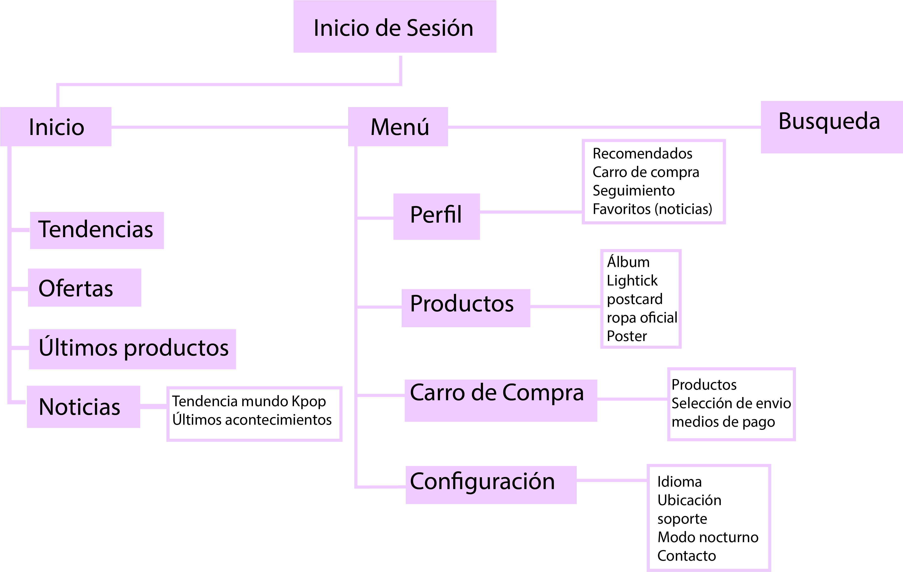

Blackberry

Descripción general del proyecto
Blackberry es una aplicación móvil de productos relacionados con la cultura pop Coreana, en esta tienda los usuarios podrán adquirir álbumes, mercancía oficial de sus idols favoritos además tiene un apartado de noticias donde se podrán informarse de los últimos acontecimientos del KPOP, Blackberry permite seguir su compra, en otras palabras, los usuarios podrán ver en qué zona del país viene su producto y cuanto aproximadamente se demorara dicho producto en llegar.
Objetivos de la aplicación
- Comprar productos relacionados con el Kpop
- Realizar una compra segura
- Informar acerca del Kpop
Descripción del Mapa de contenidos
El mapa de contenidos jerarquiza los elementos de la aplicación. Inicialmente se pide un registro para ingresar a la app, luego se introduce a una home que muestra todos los productos en oferta, tendencias y las noticias más recientes.En las categorias podemos encontrar mercancia solamente oficial de cada banda, solista o grupo coreano. Estas categorías son: álbumes, vestuario, poster, postcard y lights tick.Dentro del perfil encontrarán los datos asociados más las preferencias del usuario y recomendaciones de la aplicación. Además posee un modo nocturno para complementar con los gustos o preferencias.
Arquetipos
Fan obsesiva
Celeste: Conocio el KPOP a traves de una amiga , tiene 15 años, cuando conocio el mundo del Kpop lo queria tener todo. Es aquella que vive por ellos, conoce todas las curiosidades de su grupo favorito, se desvela esperando los comebacks y hace stream 24/7. Es una persona empática, ya que es capas de entender cuando sus idols se siente masl/spbreexplotados. Es una persona intensa(emociones siempre a flor de piel), quiere verse como ellos ya que esta en la etapa de descubrimiento personal, anhela ser un kpop idol por ello busca formas diversas de informarse sobre la cultura Coreana. Quiere todo tipo de mercansias desde discos hasta las prendas que visten. El nivel socioeconómico de su familia es medio/Alto Usa aplicaicones como Melon, amino, youtube, tiktok, instagram y pinteres. Trata de aprender un poco de coreano pero falla en los intentos. Tiene una buena relación de la tecnología, la sabe usar y pasa mas tiempo con ella que con su familia muchas veces. El kpop es un refugio y un lugar seguro donde se puede expresar sin miedo, recurre a este mundo para desahogarse o después de un mal día. Es una persona creativa. Desarrolla habilidades relacionadas con el kpop ya sea baile canto,actuación, edición de videos e imagenes (memes, soft, hard)

Fan de closet
Gabriela: tiene 18 años conoció el kpop por BTS a través de la radio Diney. Se averguenza un poco de decir que le gusta el kpop, tiene miedo a que se burlen de ella o que la tachen de rara pero aún así es la que se pasa defendiendolos cuando los llaman "chinos gays". Es una persona introvertida, prefiere ser una soft stan y ver a los idols como humanos, sueña con ser la novia de alguno de ellos pero sabe que no se puede y los apoya cuando tiene una relación, es empática. Desarrolla su lado artístico y se inspira de edit que hay pinterest e intagram. Creció con la tecnología por lo que tiene una relación cercana y la maneja al derecho y al reves, aún así de vez en cuando se da un respiro del celular o sus redes sociales. Tiene un nivel socieconómico medio, puede adquerir algunos albumes como regalo de Navidad o cumpleaños por parte de su familia. Es una persona inteligente, aprende términos y adquiere un nivel de coreano básico/Intermedio, le gusta ahorrar y le gustaría algún día formar parte de una comunidad de dance covers para tener mas amigos que la entiendan y no sentirse juzgada. .

Fan Social
Rebeca: 25 años, conoció el Kpop por las redes sociales. Tiene una amiga que también le gusta el Kpop y ella la incentivo. Tiene un grupo de Kpop favorito pero le gustan otros más. Es una persona sociable, le gusta conocer otras cosas y otras personas. Usa twitter. Está interesada por los estudios. (Usa amino, VApp) Esta en proceso de ser independiente. Se deja llevar por las tendencias que ve en sus redes sociales. Postea fotos sobre cosas que le interesan. Le gusta ir a conciertos con varias amigas o amigues. Tiene planeado viajar para conocer otras culturas. De ves en cuando se compra mercancia oficial de su grupo favorito. Es responsable y busca ser independiente por lo que trabaja para darse sus gustos. Su nivel socioeconónmico es medio. Se destaca por ser una persona extrovertida, no le interesa lo que digan los demás por lo que su edad no le afecta a sus gustos. Tiene buena relación sus familiares. No está interesada en las relaciones, ya que tiene otras metas. .
Guía de Estilos


Wireframes y Mockups
La temática de nuestra aplicación consiste en otorgarle al usuario suavidad y estética llamativa, es por esto por lo que nuestros wireframes están creados para visualizar la gráfica coreana que atrae a las personas de todas partes e incentivar la compra de dichos productos, otorgándole protagonismo a estos últimos. En cuanto a los mock up, siguiendo esta línea de estética coreana se realizaron de la siguiente forma para conseguir y conectar con los resultados.